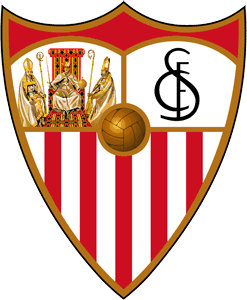

El Sevilla Fútbol Club es uno de los equipos de fútbol mas laureados de España y de Europa.
El Sevilla FC tiene una afición muy consolidada y reconocida también por sus ultras "Biris Norte", conocidos por Europa por ser uno de los mejores grupos de animación a nivel Europeo. Acompañando al Sevilla FC en todos los partidos del Sevilla en España o en Europa.
